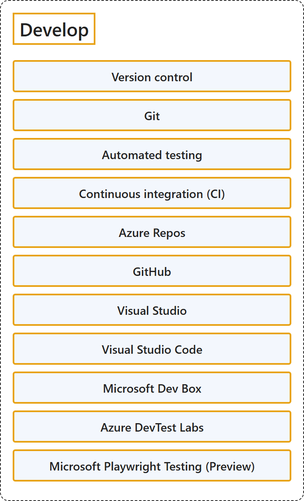

23.2 Develop
Classification

Glossary
| Term | Definition | 中文翻译 | Source |
|---|---|---|---|
| Version control 版本控制 |
"Version control is the practice of managing code in versions—tracking revisions and change history to make code easy to review and recover." | 版本控制是按版本管理代码的做法，即跟踪修订和变更历史，使代码易于审查和恢复。 | Microsoft, 2023, "Version Control" section, para. 1 |
| Git Git |
"Git is a distributed version control system, which means that a local clone of the project is a complete version control repository." | Git 是一种分布式版本控制系统，这意味着项目的本地克隆就是一个完整的版本控制存储库。 | Microsoft, 2022, para. 2 |
| Automated testing 自动化测试 |
(context) "Automated tests execute as part of the CI process to ensure quality." | （语境）自动化测试作为 CI 过程的一部分执行，以确保质量。 | Microsoft, 2023, "Continuous integration and continuous delivery (CI/CD)" section, para. 1 |
| Continuous integration (CI) 持续集成 (CI) |
"Continuous Integration (CI) is the practice used by development teams to automate, merge, and test code." | 持续集成 (CI) 是开发团队用来自动化、合并和测试代码的做法。 | Microsoft, 2023, "Continuous integration and continuous delivery (CI/CD)" section, para. 1 |
| Azure Repos Azure Repos |
"Azure Repos is a set of version control tools that you can use to manage your code." | Azure Repos 是一套版本控制工具，可用来管理你的代码。 | Microsoft, 2026a, para. 1 |
| GitHub GitHub |
"GitHub is a platform that supports your entire software development process, from planning work to deploying and operating software." | GitHub 是一个平台，支持你的整个软件开发过程，从规划工作到部署和运营软件。 | GitHub, n.d., para. 1 |
| Visual Studio Visual Studio |
"Visual Studio is a powerful integrated development environment (IDE) for Windows where you can develop, build, debug, test, and deploy your apps, all in one place." | Visual Studio 是一个功能强大的 Windows 集成开发环境（IDE），你可以在同一个地方开发、构建、调试、测试和部署你的应用。 | Microsoft, 2026d, para. 1 |
| Visual Studio Code Visual Studio Code |
"Visual Studio Code combines the simplicity of a source code editor with powerful developer tooling, like IntelliSense code completion and debugging." | Visual Studio Code 把源代码编辑器的简洁和强大的开发者工具结合在一起，例如 IntelliSense 代码补全和调试。 | Microsoft, n.d., para. 1 |
| Microsoft Dev Box Microsoft 开发箱 |
"Microsoft Dev Box gives developers self-service access to ready-to-code cloud workstations called dev boxes." | Microsoft Dev Box 为开发人员提供自助访问，可以使用称为 dev box 的随时可编码的云工作站。 | Microsoft, 2026b, para. 1 |
| Azure DevTest Labs Azure 开发测试实验室 |
"Azure DevTest Labs is a service that enables developers and testers to quickly create and manage Azure virtual machines for development and testing." | Azure 开发测试实验室是一项服务，让开发人员和测试人员可以快速创建和管理 Azure 虚拟机，用于开发和测试。 | Microsoft, 2025, para. 1 |
| Microsoft Playwright Testing (Preview) Microsoft Playwright Testing（预览版） |
"Playwright Workspaces is a fully managed cloud browser platform for testing applications, automating browser workflows, and powering AI agents through browser interactions." | Playwright Workspaces 是一个完全托管的云浏览器平台，用于测试应用程序、自动化浏览器工作流，以及通过浏览器交互为 AI 智能体提供支持。 | Microsoft, 2026c, para. 1 |
References
- GitHub. (n.d.). What is GitHub? GitHub Docs. Retrieved October 27, 2026, from https://docs.github.com/en/get-started/start-your-journey/about-github-and-git
- Microsoft. (n.d.). Why did we build Visual Studio Code? Visual Studio Code. Retrieved October 27, 2026, from https://code.visualstudio.com/docs/editor/whyvscode
- Microsoft. (2022, November 28). What is Git? Microsoft Learn. https://learn.microsoft.com/en-us/devops/develop/git/what-is-git
- Microsoft. (2023, January 24). What is DevOps? Microsoft Learn. https://learn.microsoft.com/en-us/devops/what-is-devops
- Microsoft. (2025, May 30). What is Azure DevTest Labs? Microsoft Learn. https://learn.microsoft.com/en-us/azure/devtest-labs/devtest-lab-overview
- Microsoft. (2026a, February 16). What is Azure Repos? Microsoft Learn. https://learn.microsoft.com/en-us/azure/devops/repos/get-started/what-is-repos?view=azure-devops
- Microsoft. (2026b, March 21). What is Microsoft Dev Box? Microsoft Learn. https://learn.microsoft.com/en-us/azure/dev-box/overview-what-is-microsoft-dev-box
- Microsoft. (2026c, September 15). What is Playwright Workspaces? Microsoft Learn. https://learn.microsoft.com/en-us/azure/app-testing/playwright-workspaces/overview-what-is-microsoft-playwright-workspaces
- Microsoft. (2026d, March 20). What is Visual Studio? Microsoft Learn. https://learn.microsoft.com/en-us/visualstudio/get-started/visual-studio-ide?view=visualstudio